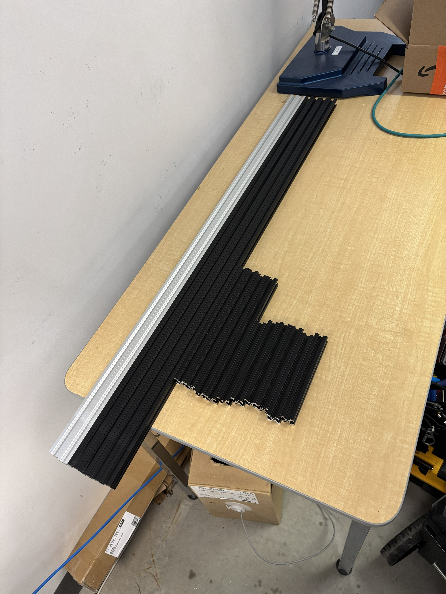
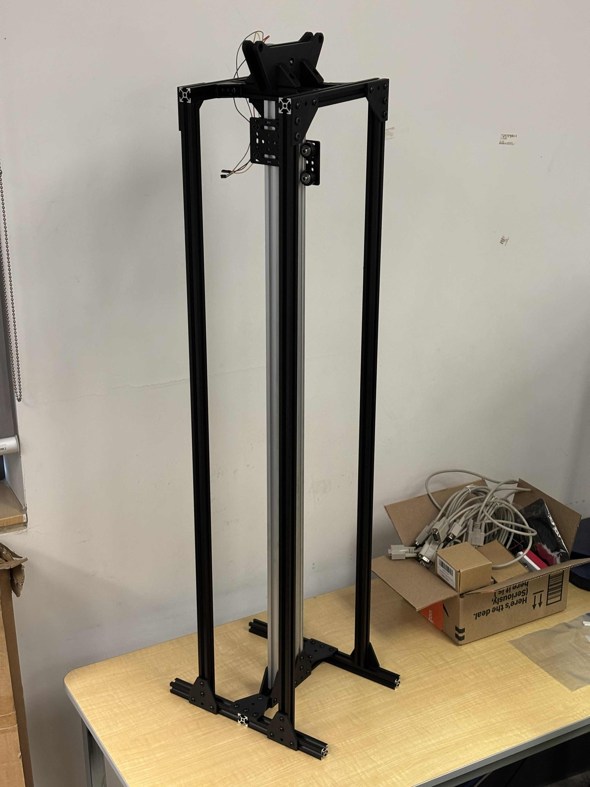
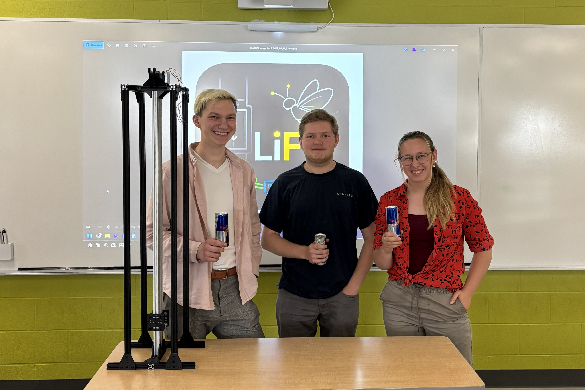

Summary
My logbook cover pageAfter Nick cut 2020 aluminum extrusions to length, I assembled the platfrom for the first time.


Overall, the initial platform assembly was successful. However, the gantry plates used do not have enough adjustment range to allow free motion along the 2020 V-slot extrusion. This issue can be resolved thorugh wearing in the rollers or adding approximatelly 500g of extra weight to the traveller cars to overcome the friction forces. Additionally, due to cut tolerances, the platform has 1-2mm gaps at the top. This is not critial, and does not impact the overall assebmly ridgidity.
As the project is coming along, we made updated team picture.

To celebrate the end of a productive week, the team gathered at RabbidFox pub to eat pizza and get beverages.